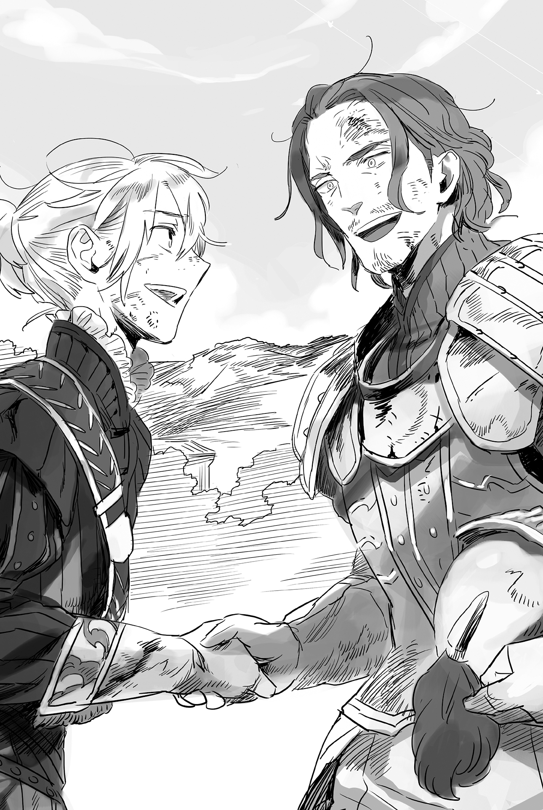
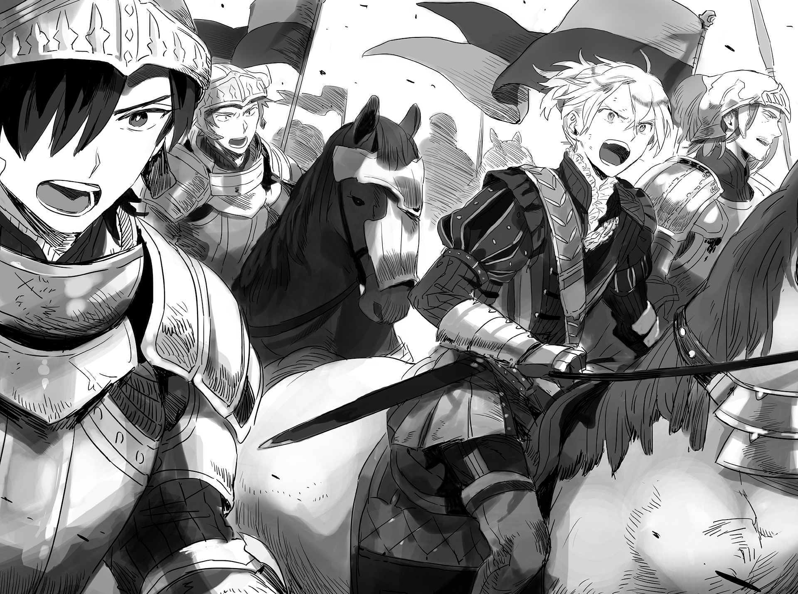

Chapter 4 – Fierce Battle, Once More
.
Part 1
As expected it was Zirco and others, the core of the mercenaries that possessed familiarity of the land that detected the invasion of Haurelia army’s main force.
Among them there were also veteran mercenaries who had fought in the previous war.
It was no trouble for them to sneak deep into the enemy territory.
「There are forty……no fifty thousand of them……」
「No……we still haven’t seen the supply troops. In the worst case their number might surpass sixty thousand.」
「That’s bad news……Haurelia is going to be destroyed if they lose. Are they prepared for that?」
The scale of the army was too absurd to be dispatched to an insignificant small territory like Antrim.
Zirco who was just a mercenary couldn’t even imagine the reason why Haurelia was this fixated to Antrim.
「Go tell the lord viscount. Haurelia is coming with everything they got.」
Cell asked back with a puzzled look. The way Zirco said that sounded like she was going to remain here.
「Then, what are you going to do Zirco?」
「──The handicap is too big like this right? I’ll do the work I’m paid to do here.」
Zirco grinned fearlessly. As her war comrade for many years, Cell could see the depth of her resolve in that smile.
「We ain’t paid enough for this. We got to charge that viscount-sama to pay a mountain of bonus later.」
「Yeah, I’ll leave that to you, Cell.」
Even though they were fellow mercenaries, what decided which of them became the leader was their strength and the charisma they were born with.
Cell didn’t think that he was inferior in strength compared to Zirco, but this kind of time made him felt that he wasn’t a match against Zirco in status as mercenary.
「──Don’t die, Zirco.」
The work of mercenary was always accompanied side by side with death.
Even if he had twenty fingers in both hands, he wouldn’t be able to count the number of comrade who he had seen off in this line of work.
Zirco and her allies had struggled through numerous battlefields and survived.
However even knowing that, Cell still thought that it was a rash attempt to try to challenge that army of several tens of thousands.
「Don’t worry, I’m just going to make fun of them a bit before running away.」
It might be the fault of his sentimentality.
Zirco’s face when she smiled a little shyly like this looked very adorable for some reason.
Cell shook his head to shake free from that trick of his imagination and made his horse turned around without even looking behind.
Zirco saw off the back of Cell that was getting further away and questioned his comrades.
「Now then……as expected this time we might not be able to go home alive but, are you guys alright with that?」
「Oi oi, even though we’re gonna get paid a lot of bonus after this, are you trying to hog them all by yourself huh?」
「Yep yep, the bonus will be the biggest after going out alive from the dangerous crap!」
Zirco stared at his comrades who were laughing and cracking jokes at each other with trust and reliance.
For mercenaries, survival was their supreme imperative.
The price of their life was cheap and their employers tended to use them as disposable pawn, because of that they had to protect their life by themselves. That was why mercenaries would be the first one to run away from a disadvantageous battlefield.
However when mercenaries became veteran like Zirco, they had cultivated a professional sense to work in proportion of the money they were paid for.
It was extremely hard to deal with capable mercenaries who weren’t fussy with their method when they stuck to unconventional warfare. In addition, if such capable mercenaries also hardened their resolve to fight to the death, their furious might would sometimes be equal with a calamity.
Originally mercenaries didn’t have any reason to die.
Therefore when mercenaries voluntarily resolved them to die, it would occasionally give birth of a legend in the battlefield.
「──I still wanted to eat more of the chief’s new dishes though……」
Zirco recalled her memories of these several years that were full of truly earth-shattering things and grinned brightly.
Even though at first she was simply visiting Maggot because she was feeling the signs of battlefield in the air, life was truly interesting and full of ups and downs that couldn’t be predicted.
「Well, even so managing it somehow no matter what life throw at us is how we roll!」
.
Looking forward to death and yet not throwing away hope till the very end.
No matter how deathly and hopeless a battlefield looked like, there surely was a single ray of hope remaining somewhere. Any capable mercenary knew that from personal experience.
「Miranda, snipe at the enemies from inside the forest. Glymur, bring four people with you and hurry with the preparation. Mistol and the rest, come with me. Let’s fire the starting shot a bit flashily!」
「Ou, flashy is just how I like it.」
「This makes me feel sympathy to the enemies instead……they absolutely won’t think that we are mercenaries at all.」
Even so the possibility of all of them coming back alive was practically nonexistent.
But they were mercenaries among mercenaries exactly because they were able to calmly laugh that off.
.
Part 2
「What’s that?」
Haurelia’s large army stopped moving at the flame that suddenly spread.
「Forest fire……this doesn’t look like it……is it just a small fire?」
「We don’t have any time to get involved with fire accident right now but……send some scouts just to make sure.」
The one who replaced Flandre to take command of the whole army was Count Dunkirk, Rochambeau who was the vice minister of the military ministry.
If his weakness that was his lack of field battle experience because his job field was consecutively at military administration was ignored, he was a man who was famous as a prodigy that was well versed with military affairs even throughout the whole Haurelia Kingdom.
Because of that, he regarded the effect that Antrim army made to the war as important. If Flandre was excluded, he was the one who was the most wary toward Antrim army within Haurelia army.
「Don’t tell me……」
The inferior army had the choice to carry out aggressive defense by attacking proactively in order to buy time against the enemy’s attack, but it was unthinkable that Antrim had the troops to carry out such thing.
He still needed a little bit more time to realize that his premonition was right on the money.
.
The knights who went out to scout confirmed that the spreading flame’s scale was more than they expected and cocked their heads in puzzlement.
They couldn’t see any peasants, so this wasn’t the work of peasants burning the forest to open up land for agriculture. But the speed of the flame spreading around was too fast for this to be a natural combustion.
The possibility that this fire was lit up intentionally by someone was high, but it was unknown what their intention was by doing something like this.
「……Could this be a harassment from the family of soldier who got conscripted? Either way this fire isn’t a big deal.」
Haurelia army didn’t have the leeway to leisurely extinguish the flame.
The scouts moved to turn around while thinking that. It was then a knight’s body was bisected along with his armor.
Blood spurted out like a fountain. Entrails were plopping down on the wet ground.
The scouts were bewildered by the gruesome scene that made them doubted their eyes.
「What? What happened?」
「Don’t tell me……enemies?」
For a moment, it felt like there was a gust of wind blowing. Then at the next instant, his colleague had been reduced into a gruesome corpse.
Their reaction was slowed because they didn’t think that they would receive an attack while they were still within their country.
「──Sorry but I won’t let even a single one of you return alive.」
Miranda’s arrows came flying at the same time with Zirco’s signal. The scouts were shot down one after another.
And then Zirco also began to knead mana through her whole body once more.
Zirco’s body strengthening had explosive power, but it took time to charge, so it was unusable without support from her comrades.
「Retreat! It’s an ambush! There is a platoon of them at the very least!」
Actually it was even less than that, there was just a squad of them. But either way they mustn’t let the enemy realized just how few of them there were.
「You won’t get away!」
Several mercenaries led by Mistol attacked from behind the scouts to cut off their path of retreat.
「Shit! Scatter! Scatter-!」
The scouts wanted to report this back no matter what, while the mercenaries didn’t want to let them report this. Currently the tactic of Zirco was progressing smoothly.
「……I’ll make you regret challenging us with only this few troops!」
A scouting knight gritted his teeth in frustration his comrades’ death while making his horse turned around and muttering hatefully.
Although his comrades were killed, with the size of their army, this damage was nothing more than an itch.
It didn’t change the future result that the enemies would all be slaughtered.
However──.
「Wha-!?」
There were steel strings that had been laid out from tree to tree without him noticing it. The sight of those strings glimmering from the sunlight that filtered through the leaves was his last sight in this world.
「Riding horse in a place with bad visibility like this is no good.」
Despite his huge body, Glymur was good with this kind of handiwork.
He was a man that Zirco didn’t want to turn into enemy just as much as Cell in an unconventional warfare like this cramped forest.
「With this──it’s over!」
Zirco who had kneaded her mana enough transformed into a gale once more and blew forward.
*Drip, drip* The men who should be running away with their back turned were scattering blood from their necks and fell.
Thus the group that was dispatched as scouts was annihilated with not even a single survivor.
.
「──Late, there is no way they should be this late!」
Rochambeau felt something was strange because the scouting party hadn’t returned even now. He was forced to order the whole army to stop.
Because the army was extremely big, simply ordering it to stop needed a lot of effort to maintain the order and sending messengers from the front line until the rear of the army.
Zirco’s aim was to make the enemy spent time and effort pointlessly like that.
「The scouts are most likely trapped and annihilated by the enemy. Seeing that not even one of them manage to return, at the worst case the enemy might be sending a company of their troops here. All of you, never stop staying in contact with each other no matter what.」
He formed two new companies as scouting unit.
While they still didn’t know how many enemy there was, he couldn’t possibly resume marching while ignoring the risk of getting pincer attacked.
Normally Rochambeau would only leave a company to scout and left them behind while hurrying forward, but even though their opponent was just a small territory at remote region, Viscount Antrim had crushed the elites under the leadership of Flandre. He was unable to wipe his anxiety that the enemies might be able to do the impossible.
「……If you realize that the opponent is beyond your capability, return immediately and wait for reinforcement.」
「Understood!」
Rochambeau’s anxiety was also shared by the knights.
For them, Antrim army wasn’t just enemy that should be defeated. They thought of them as something aberrant.
.
*Crackle, crackle* Fire was scattering sparks while spreading from the forest to the grasslands.
The knights grimaced from the heat that their faces felt.
Although they didn’t have the leeway to extinguish the flame, the strength of the flame made them worried to simply ignore it.
At first Mistol and his men simply split up and light up fire around, but because of the dry weather, the fire was spreading even more than Zirco expected.
.
「──Now then, I’ll rely on you to deal with those guys.」
Glymur replied to Zirco with a low mutter.
「Leave it to me. You too, don’t do anything rash Zirco.」
「I don’t think I can follow that advice……after all this plan is like dancing tango with recklessness.」
The chance of her dying wasn’t merely at 8 or 9 out of ten, it was almost an inevitability.
Even so Zirco believed that there would be at least a 1 in 10000 chance of her managing to get away with her life intact.
She still hadn’t given up tasting the sweets that Baldr created once more.
「I just need to get back alive, that’s all. After all it feels like I’ll still be able to have fun as long as I work under that chief.」
「──You ain’t wrong.」
She wondered what would happen to her right now if Baldr didn’t come to talk to her that day at that restaurant.
There was no doubt that she would go to other place that still had battle, like Nordland or Trystovy. But she couldn’t imagine that she would be able to spend fun and fulfilling days like in this place.
Just from granting her a fun life like was enough to make Baldr a master that was worthy for her to offer her loyalty to.
「Cell, Glymur, Miranda, let’s meet again.」
「Don’t you dare die! Zirco, Mistol!」
Zirco led the mercenaries under her command and they split into two teams.
.
「Oi, wait! There are people collapsed there……!」
The knights discovered corpses lying on top of one another. They got down from their horses.
「Shit! As expected……」
「The enemies are skilled. This body is bisected into two with one attack……」
There were also people who wailed because they discovered acquaintance among the corpses.
Although they were resolved to die anytime in battlefield, there was no way they wouldn’t be sad for their comrades’ death.
「Be careful, there are enemies near……by」
A knight who was talking swayed and fell on the ground head first.
「Oi! What’s wrong?」
A knight who ran to the falling knight in panic also felt a light dizziness. Then his eyelids naturally closed and he lost consciousness.
「──Poison-!」
There was an offensive smell that was similar to vinegar. Originally they should notice it quickly, but the smell was covered by the smell of blood and intestines that caused nausea to well up inside them.
The knights who got too close to the corpses of their comrades were collapsing one after another. The people who were barely outside the effective effect of the poison was hit with an axe that slashed like storm.
「Don’t think bad of us. I won’t have any face to look at Zirco if I don’t finish off you guys here.」
And then Miranda and Cell’s accurate support fire flew from behind Glymur.
The scouting knights were immediately annihilated like rotted trees falling.
「Second platoon! Did something happen?」
A new platoon of knights appeared as though to replace the annihilated knights.
Most likely the two platoons were scouting while exchanging position with each other so they wouldn’t get isolated.
「Oops, the reinforcement came.」
「You bastards!? Enemies! Notify the commander quickly!」
「Well, let’s lure them away from Zirco and others.」
Glymur said that and they all turned around to vanish into the forest while luring away the pursuers.
.
A group wearing the armor of Haurelia Kingdom’s knight appeared as though to replace that platoon. They rushed out of the forest swiftly.
「It’s an emergency!」
The group shouted loudly while breathing hard.
Normally something like this was impossible to happen.
Certainly there was an emergency, but this group didn’t speak at all what the emergency was about.
In addition the armors they were wearing had bloodstains all over and even traces of spear thrust, so it should be relatively easy for anyone to notice the group’s true identity.
However this abnormal situation occurred even though the army was still within Haurelia territory. Their fear toward Baldr’s mystery was magnified and everyone in Haurelia army fell into misapprehension that Antrim army had shifted into counterattack.
「Where is the enemy? How many are they!?」
The completely unexpected situation caused the lack of field battle experience of Rochambeau to come to the forefront.
In order to gather accurate information as soon as possible, he allowed a knight to rush in a beeline toward him and questioned the knight.
「Their number is 100000! They are currently marching to invade the capital Elise!」
「That’s impossible!」
That number was impossible even if Mauricia Kingdom gathered all of their troops.
It was even more impossible that such a large army was already arriving within the territory of Haurelia Kingdom.
Of course the knight who reported that knew that better than anyone.
「──Well, I’m lying though. You better remember this, you won’t know what is going to happen at battlefield.」
The knights grinned fearlessly and swung their spears to every which way while charging to the center of Haurelia army.
.
「Shit! Enemy spies!」
This large army was largely composed from soldiers that were conscripted from every region and loosely led by their respective feudal lord. It was very hard for such army to capture a small group that was rampaging within their rank.
Zirco and her men handily defeated the soldiers who were in chaos and rushing at them without even working together with each other.
It was also a great help that Zirco and others were wearing the same armor like Haurelia army’s knights.
After all most of the conscripted soldiers were only acquainted with conscripted soldiers that came from the same place like them.
「Gather the knight order! Move the militias out of the way!」
Even so being unable to move easily was the weakness of a large army.
Although the damage was insignificant, this attack tore apart the chain of command of Haurelia army to shreds.
「Defend! What are you doing! Defeat them already!」
It was just a bit more distance until Zirco and her men could reach the confused Rochambeau.
Zirco made her horse ran while throwing a spear toward Rochambeau.
The spear turned into a gust of wind and it looked like it would pierce Rochambeau without a doubt, but the spear was soaring high to the sky while leaving behind a high-pitched metallic sound.
「I won’t let his excellency Rochambeau be killed here.」
──It was Flandre Gustin.
「You have become even more manlier after not meeting just for a short time!」
Although she said that, Zirco couldn’t stop cold sweat from trickling down from her forehead.
Even for mercenaries who were living their life in battlefield, it wasn’t that often for them to get hatred of this level directed to them.
Flandre who now had become one-eyed was emitting a dreadful aura like a revenant. The defeat he experienced was making his rage burning brightly.
Zirco was also sensing enemies at knight order commander level other than Flandre approaching. She recognized that the best chance had escaped her grasp.
「It’s too bad but it’s time to close shop! We’re running you bastards!」
「Don’t think you can escape!」
Flandre slashed at Zirco who suddenly turned her back at him, but a spear annoyingly brushed it away from the side.
Mistol who was following Zirco from behind threw a spear at Rochambeau.
「Damn you! This impertinent thug!」
Soldiers were rushing from every direction in order to surround the fleeing Zirco and her men.
But at the same time those soldiers were also precious shields that were protecting Zirco and others.
If there was enough space in this place, the elites that included Flandre would be able to freely attack and kill Zirco in short time.
「Don’t look back! You’ll die if you stop running!」
Don’t think of anything else but forward, forward!
Even with the most pessimistic calculation, it would take at least half a day to calm down this chaotic group and ordering them to march to Antrim once more. And then if they raised their guard so they wouldn’t get hit by another surprise attack like this, then it might delay them by a day longer or even more.
The suicidal surprise attack of Zirco and her men had bought time which was more precious than blood for Antrim right now.
「Don’t let them get away! It will be a disgrace to Haurelia army if they get away!」
「Uwah!」
A mercenary fell from his horse after an arrow hit the horse. Soldiers were swarming the mercenaries who lost his feet to escape.
「Kisling!」
「Don’t stop. You were the one who said that right? Hurry and run!」
At the same time as he finished saying that, the man called Kisling took out a flint.
「Hmph, I didn’t keep this in reserve to make my death flashy though……!」
Countless spears pierced the body of Kisling who stopped moving with a faint smile.
And then at the next instant, a flower of explosion bloomed with smoke rising high.
「Kisling……! You damn idiot!」
Zirco spat out with blood flowing from her lip.
Zirco and her men was already arriving to the outer edge of Haurelia army.
Just a bit more, just a bit more and they could get out of the encirclement. After that it would be a straight line dash until Lena River.
No matter how enraged Haurelia army was, they wouldn’t do something strategically meaningless like searching for them until the river’s downstream.
Zirco and others set off their explosives all at once after breaking through.
However there was someone who was intensely furious when seeing that.
It was Flandre who became the general of a defeated army due to the flamethrower and various other secret weapons.
Flandre couldn’t accept seeing that nightmare unfolding once more in front of his eyes.
It was unforgivable to accept it.
「YOU SHAMELESS BASTAAAAAAAAAAAAAARDS!」
Flandre screamed and charged into the dense flame and smoke of the explosion.
Even though his body was burned here and there, Flandre miraculously broke through the smoke and caught sight of the defenseless backs of Zirco and others who were lying down to protect themselves from the blast.
(I found you, you devils who defiled the purity of war!)
「DIEEEEEEEEEEEEEEEEE!」
He couldn’t catch up to them with his injured body.
It would also be too late for his allies that were in chaos from the explosion to chase after them. Then with this one attack, he would kill the woman who seemed to be the commander!
Flandre exerted all his strength and swung his beloved spear that he had been using for many years.
And then the spear became a flash of light. It closed the distance between Flandre and Zirco with a speed that the eye couldn’t follow.
It was already too late when Zirco noticed.
It would be impossible to escape from that large army if she focused to behind her.
And so she single-mindedly charged forward, but it came to bite her in the ass here.
However──.
The spear that Flandre threw pierced Mistol’s chest along with his spine with a dry sound of crushed bone.
Mistol who was running diagonally behind Zirco jumped in front of the spear to cover for her.
The spear’s momentum brought it to jut out from his back and pierced Zirco’s armor too. The tip stabbed into her abdomen.
「……Are you injured? Zirco……」
Zirco noticed that Mistol was dying and he was already losing his eyesight.
He was an old friend of her, the only who one who she had allowed deep into her heart. They had protected and each other through many battlefields. He was a comrade who she could entrust her back to without worry.
Zirco sobbed that Mistol now didn’t have long to live.
「Yeah──I’m not even scratched thanks to you.」
It was a lie.
The spear that stabbed deeply into Zirco’s stomach wasn’t lethal, but it also wasn’t a light wound by any means.
But Zirco didn’t have any other words than those to say to Mistol who was dying in front of her.
「It looks like this is my time to pay the piper. It had been fun, Zirco.」
「Yeah……I also had fun, Mistol.」
And then Zirco hugged Mistol who had fallen silent with all her strength.
「Good grief, even though I planned to make you take me if there isn’t anyone who will marry me, and yet you are going ahead of me like this……」
Perhaps it wouldn’t be that bad for her to die together with him like this here.
Although she was basking in such sentimentality, Zirco still threw herself into the rapid current of Lena River.
The figures of Zirco and others vanished under the river current in the blink of eye. Haurelia army didn’t have any leeway or time remaining to chase after them.
.
Part 3
Haurelia army’s arrival was almost a day later than Baldr’s prediction.
Due to the report from one of the mercenaries, Quick Steps Wilber, Balrd knew who it was that he should thank for giving him that one extra day.
This single day that Zirco and her men gave him was really precious.
The biggest effect from it was the arrival of reinforcement in the form of Viscount Mattis Bradford.
Mattis crossed Mountain Range Morgan to arrive here. Although he was very late from the schedule, he made it in time just before Antrim fell.
「Ooooh! So you are safe, Baldr-dono!」
「Mattis-sama’s reinforcement is like obtaining more than ten thousand allies.」
Baldr and Mattis exchanged a firm handshake. They praised each other’s bravery.
In fact, if it wasn’t Mattis, the arrival of the reinforcement would be even later than this.

Even so, Mattis’s reinforcement only numbered a thousand and several hundred soldiers. Furthermore they were extremely exhausted from marching through a mountain that they weren’t familiar with.
Although they had taken a lot of rest since yesterday, they still hadn’t fully recovered from their fatigue.
Also, if the enemy’s number was the same with them, there would be nothing to fear. But Haurelia army was dispatching a large army that numbered more than 50000. It was a number that made one questioned if perhaps Haurelia army had mobilized every troop it had from all over the country.
Against this number, the reinforcement form Mattis was like a drop in the bucket.
Although they had enough hope that more reinforcement would also come to Antrim the more time passed.
Before this they didn’t know which place Haurelia army would target, so soldiers had to be on guard all along the border. However if it became known that Haurelia was sending almost all of its troops to Antrim, those soldiers on guard along the border could be freed to do something else.
In this situation, it wouldn’t be strange even if Cornelius sent reinforcement to Antrim.
「It will be great if we can hold out until then, but……」
Baldr knew just how difficult it would be.
Haurelia army wasn’t weak at all when facing the enemies head on. Furthermore the majority of their troops were more trained than Antrim army.
It was unknown how long they would be able to hold out now that they were lacking supply. Baldr couldn’t hide his deep sigh.
.
Meanwhile, it wasn’t like Haurelia army that was boasting an overwhelming battle strength wasn’t riddled with problems of their own.
Although the attack from Zirco’s group the other day only inflicted insignificant damage to the army on the whole, the psychological impact from it was great.
After all the fear of receiving another surprise attack was causing the whole army to be nervous even until the lowly foot soldiers. The fatigue from that nervousness was accumulated.
This state of mind wasn’t really desirable when facing Antrim army that was commanding several mysterious weapons.
However Haurelia army had Flandre who was already experiencing a battle against Antrim and many other commanders who were strategically capable, like Arseille for example, the commander of Golden Dragon Knight Order, Haurelia’s strongest knight order. Their superiority was unshakable.
They had to win no matter what and obtain Antrim’s secret weapons.
Haurelia army came here for the sake of that. They wouldn’t hesitate to pay any price no matter how many sacrifices were resulted from this battle.
「……Even so, this quagmire is troublesome.」
In front of Flandre, a quagmire area that felt like it had been transformed into bottomless mud was spreading.
It seemed that the enemies had thoroughly processed this area. If they charged head on through it, the troops’ feet would immediately get tripped up by the quagmire and it would result to a mountain of sacrifices.
Even so, they had no option to leisurely deploy a battle of arrow shooting.
For Haurelia army, the passing of time was their enemy. If they couldn’t take down Antrim before reinforcement from Mauricia was massed, they would be ruined in defeat.
「──So the only option is death.」
There was no way that general of Antrim hadn’t prepared any countermeasure at all.
There was definitely another crafty trick other than this quagmire that was lying in wait. There was a need for Flandre himself to die in order to drag that trap under the light of day.
「──However I won’t die for free. This time it will be your turn to display your tearful face!」
.
Part 4
Magic attacks were fired toward the restored trench line as support. At the same time the frontline started to move.
Using the excessive amount of manpower that they had, Haurelia army performed a carpet bombing with magic while at the same time they were using magic to harden the quagmire so that the infantries could charge.
In respond, Antrim army threw explosives using catapults and shooting with crossbow to oppose the enemies.
The vanguard that was led by Flandre had twice the magicians invested in it. They performed support by firing magic attack that relied on number. Flowers of crimson flame bloomed and scattered clouds of dust everywhere. It turned Antrim army’s field of vision to be unclear.
「It has become even worse than the other day huh.」
Salil hid his head at the parapet and continued shooting with only guesswork.
His accuracy decreased because he couldn’t aim, but there were few people who could continue working while ignoring arrow that flew at them. Even if it didn’t hit, there was a meaning in continuing to shoot at the enemies.
「It’s fine-! If it’s the lord then…!」
Carlyle was harboring trust that bordered on worship toward Baldr. Salil thought of how good it was to be young.
Certainly that feudal lord was a rising star, but he wasn’t an omnipotent god by any means.
Because he wasn’t god, he would die if he was stabbed, and there would also be battle where he lost. He would also need to sacrifice something in order to win.
Even so Salil wasn’t so twisted that he would intentionally crush Carlyle’s pure trust.
Besides he didn’t have the leeway for that right now.
「I’ll pray that your trusted lord will be able to do something about this.」
A loud sound that pierced the ears resounded. It seemed an explosive had landed at the front and exploded.
「Oi oi, they aren’t going to make a mistake and drop a bomb on their ally right?」
He would turn in his grave later if he got killed by the support bombing that was the only hope of the soldiers at the frontline.
Salil shrugged and fixed the positioning of his heavy helmet.
.
It was only little by little, but the infantries led by Flandre was advancing through the quagmire that was solidified by the magicians’ hardening magic.
In front of them was the barbed wires that had been erected once more──although the wires showed some place where they were coming apart due to the support attack magic, they were still effective in hindering the mobility of a large army.
Their duty was to go to the middle of the battlefield where shooting from both allies and enemies were flying wildly about and removed the barbed wires so they could break through Antrim’s trench line.
It was a cruel mission where death was waiting for 8 or 9 out of 10 people.
However Flandre proudly held his head high in the middle of that and showed not the slightest expression of despair or hesitation.
The fighting spirit of Flandre was transferred to his men. The vanguard unit continued to advance.
「──That bastard, what is he planning?」
Flandre who was exposing himself at the frontline as though to challenge the enemies, try to kill me if you can, was puzzled at the strange respond from Antrim army.
The explosives that had been flying from some time ago were clearly aiming at the magicians at the rear.
Certainly the number of casualties would jump up drastically if they lost the magicians’ support, but it was always the swarm of infantry that decided the outcome of battle.
At the extreme, if Haurelia army was prepared to be annihilated, just charging through this quagmire and breaking through also wouldn’t be impossible.
And yet, the attacks were passing through above them as though they were being ignored. Flandre couldn’t understand the reason at all.
At this rate, the situation would only gradually turn worse for Antrim army.
There was no way that the enemies would simply rely on that tube that spewed out flame.
They had learned that the range of that weapon was short, and it had already been proven that it was possible to block it using magic shield. It was a weapon with its trick already exposed.
Flandre’s objective was obtaining that weapon unscathed by any means.
The enemies attacking using that weapon was something that he wished for instead.
Flandre had the confidence that the quality of his troops absolutely wouldn’t lose against the enemy. That too was also an irrefutable fact.
──That was exactly why Baldr was pressed with the necessity to change the situation before an all-out clash between infantries occurred.
.
「──What in the world is Baldr-dono trying to do?」
Baldr was feeling anxious by Baldr’s incomprehensible action since some time ago.
Common sense stated that they should focus their attacks to the vanguard that was packed close to each other and moving slowly in order to take the wind out of the enemies’ sail.
In this situation, it didn’t look like there would be any other way to hold out here other than endure while continuing to bloody the nose of the enemy as much as possible and waited for them to be exhausted.
However Mattis also understood that their chance to win using that method was extremely low.
Fundamentally, an army’s fighting strength was proportionate to the number of its soldiers. The soldiers’ training would adjust the difference of number to a certain percentage, but in the end that was nothing more than a modifier correction.
Of course tactic was also a factor that would adjust the difference of strength, but Mattis couldn’t imagine anything that could possibly overturn the difference of strength between 50000 versus several thousands.
However he had no other choice but to believe. Baldr already had the track record of making a Haurelia army of more than 20000 running in defeat.
His role was to make Baldr’s strategic vision into reality as much as possible.
When a clear-cut and straightforward person like Mattis had made up his mind like that, he could calmly look down on Haurelia’s large army without the slightest anxiety anymore.
「──I’m looking forward to it. I wonder when was the last time I was feeling this excited?」
.
There was no way Baldr was able to taste the luxury of being liberated from hesitation like Mattis who reached a self-conclusion within himself.
「Don’t notice it just like this……」
All the magicians in Antrim were standing in front of water that was bubbling lava in a caldera.
Baldr had gambled everything to this tactic that he even gave up using water vapor explosion in order to carry this out.
Haurelia’s magic attacks were increasing in intensity more and more because Antrim wasn’t performing any Magic Cancel.
The explosives were barely slowing down Haurelia’s advance, but it was just a problem of time until their few remaining gunpowder ran out.
Fortunately Haurelia army that had experienced the attacks from explosives and flamethrower had no sign of using Magic Cancel.
Baldr instinctually felt that he would lose this battle if he was unable to deal even greater impact to Haurelia army, an impact that surpassed even the flamethrower and water vapor explosion the other day.
The pressure was so heavy it felt like his stomach would cramp.
He felt anxious for gambling everything to an untested tactic. He also felt sorrow for the loyal soldiers who were bravely fighting out there.
This responsibility was too heavy to be shouldered by Baldr who was essentially still a young boy.
Baldr suppressed the temptation of just entrusting everything to Sanai and silently informed the starting of the tactic.
.
It was only after a little bit of time passed since then that the soldiers who were continuing to fire arrows from the frontline realized that it was hard to breathe and they were gasping.
Of course they were at the frontline where the situation was extremely tense.
Their heart was beating like a gong inside their chest, while their lungs were continuing to urge them to breathe even more in search of oxygen.
That was why there wasn’t anyone of them that questioned why they were finding it hard to breath.
Because it was taking too much time to harden the whole quagmire area, the magicians only formed a path at the center with width of ten meters to storm toward enemy’s encampment. Through that path, there was just a bit more until Antrim’s defensive encampment was in a hailing distance.
(Hmph, so they believe in that flame tube by that much? Such thing is useless if the trick is already exposed from the start!)
Flandre couldn’t hold down his feeling exaltation from welling up due to the approaching moment for his revenge.
No matter how many casualties were produced, even if he himself also became one of those casualties, as long as a breach could be opened in the enemy’s formation, the difference in military power would decide the rest.
From his estimation, it looked like it would take just a bit more before Antrim army hit their limit in holding back Haurelia army.
Antrim army was trying to limit the battle front cleverly, but even if they succeeded in limiting the battle fronts, Haurelia army didn’t have any fear of running out of soldiers. Antrim army with their overwhelmingly fewer soldiers would be the first one to be hit their limit.
「Raise your voice in a battle cry! The glory of victory is right in front of us!」
At the previous battle, Flandre wasn’t allowed to leave his headquarter.
However Flandre’s true nature was more of a capable front line commander rather than a general.
Although he learned how to use subordinates after getting promoted, his talent in leading soldiers directly from the frontline was better.
Haurelia army already didn’t have the leeway to keep the damage at minimum in order to prepare for the next battle.
His only mission was to win. In order to achieve that, he was resolved to keep advancing even if he had leave his allies to die.
It was at this point that Flandre realized that the battle cry that was raised in respond to his shout was unexpectedly small.
「──What’s wrong?」
He didn’t feel any cloudiness in the soldiers’ fighting spirit.
In the first place, soldiers were trained to be in concord with the general’s fighting spirit.
As long as Flandre continued to stand at the front and displayed an unyielding bravery, the soldiers wouldn’t lose spirit as long as they didn’t receive a concentrated attack from the enemies and the casualties still weren’t too great. It should be impossible.
Flandre felt a discomfort that sent a chill through his back when he turned around.
They were too tired.
Fatigue would come three times faster in battlefield compared to doing activity in peace time, but even with that in consideration, the soldiers’ current state where they were breathing roughly while looking pained was abnormal.
In their current state, they would be running out of breath if they were told to charge forward.
What──what in the world was going on?
The answer didn’t come out no matter how much he thought about it.
Should he encourage the soldiers once more to raise their morale?
With the magic attack support already at the final phase right now, there was no more extension of time that would allow him to give his troops some rest first.
However with the soldiers’ state like this, he wouldn’t be able to expect their charge to produce any worthwhile impact──.
Flandre was assaulted by a fierce headache while he was thinking of that strategic problem.
It felt like his head was splitting, as though a rock had hit him. The pain ran from the top of his head until the tip of his toes.
「T-this is……」
Flandre swayed but he barely stayed on his feet, but his subordinates were falling one after another.
「Uuuuuh……!」
It was completely unknown why the soldiers were falling. Agitation was also spreading among the magicians at the rear.
──Don’t tell me? Again?
There was nothing worse than an unknown attack to decrease the morale of the allies.
No matter how powerful an attack is, there was definitely a way to block it if it could be seen by eyes.
However if they didn’t even know what was done to them, there would be no way to deal with it. There was nothing more humiliating and terrifying than this.
.
「Yosh, it seems that it’s going well.」
The vanguard troops of Haurelia army were starting to fall down. Baldr gloated seeing that.
The unknown enemy that was gnawing their body right now simply ordinary carbon dioxide.
Actually since several hours ago, Baldr had been fermenting yeast cell and salt and sugar and water to produce high purity carbon dioxide. He slowly used magic to make the carbon dioxide permeated toward Haurelia army’s position.
The scene of water on the ground breathing out carbon dioxide along with a lot of bubbles was like an abstract painting of invitation to hell.
That carbon dioxide was flowing toward Haurelia army’s position, at the same time the magicians made another convection of air so that the carbon dioxide wouldn’t scatter.
If this was a blade of wind to injure human, the enemies would immediately notice that it was an attack using magic, but no one would think of gentle air current that was like a breeze to be an attack.
Besides, in reality what was causing Haurelia soldiers to faint wasn’t the magic itself.
Carbon dioxide poisoning was caused by carbon dioxide that was commonly existing in air, even so the symptoms was quite heavy just like the average poison gas.
Normally, only 0.04% of air was made of carbon dioxide.
But when there was influence from volcanic gas or the like and this percentage reached the amount around 4%, effects like headache, nausea, quickening of heart beat, and so on would appear in human body.
When the percentage reached 10%, symptoms like buzzing in the ears, dizziness, shivering, and so on would start to appear. Then they would faint within one minute.
When the percentage reached 20%, human would faint just within few seconds. When it was more than 30%, it was possible for human to die within less than several seconds.
That effect wasn’t at all inferior to famous poisons gas like Sarin or VX gas.
Furthermore carbon dioxide was tasteless, odorless, colorless, and transparent. There were cases where people only noticed when their body couldn’t move and they died from poisoning.
In a sense, carbon dioxide could be said as something even more terrifying than common poison gas.
「Kuh……it’s difficult as expected……!」
Although the magicians were only manipulating wind to create a gathering spot for carbon dioxide at the front of Haurelia army, the range was too wide.
With magic’s characteristic where its effect would decay in inverse proportion of distance, all of Antrim’s magicians needed to exert their full strength just so they could barely maintain the effect.
If they had ten times the number of magician, it would also be possible to place the whole Haurelia army within the range of effect, but unfortunately with their current force, the best they could do was surround the enemy’s vanguard unit.
Even so, there was no soldier who wouldn’t feel fear after seeing people collapsing powerlessly on the ground while not understanding the cause.
And above all else, Baldr believed that he had succeeded in his objective to crush the enemy’s morale.
What was left was…….
.
「Get on the horse! We are going out!」
Baldr roared.
If he added even more chaos to the enemy’s fear, the enemies would crumble on their own.
Cavalry was still the strongest army branch even now when it came to mobility and propagating the ripple of a blow.
It could be said that the battle’s outcome would be decided with how much blow they could deal to the enemy’s chain of command while they were still unable to recover from their agitation.
And then in order to do that, Baldr had left behind a single spot at the right wing where the quagmire wasn’t too deep and it was possible for horses to dash through it.
Everything was for the sake of this single blow──.
「Ha-ha-ha-! So my turn has finally arrived!」
Mattis was using one hand to lightly swing around a heavy looking spear that seemed to weight twice the average spear.
「T-that’s dangerous Mattis-sama! Please aim something like that toward the enemy!」
Mattis’s tension had reached the peak after waiting for so long for his turn. Baldr warned him in exasperation.
They only had cavalry of around 300 even though they were all elites, and they were going to charge into the enemy formation that numbered in the tens of thousands.
The possibility of them being able to return alive wasn’t high even if Baldr put it mildly.
And yet, Mattis was able to maintain his fighting spirit this high without getting too worked up. As expected it was the result of Mattis’s real battle experience.
Even Baldr was unable to feel as unburdened as Mattis.
「To be the first one charging toward tens of thousands of enemies, it’s truly the long-cherished desire of warrior! Let me thank you, Baldr-dono!」
Mattis laughed freely without any worry.
To fight together with the benefactor of his daughter and the son of his best friend against worthy enemy with the fate of the country on their back.
This wasn’t the time to worry about his own life and death anymore. He only needed to display all the skills in his possession and fought for the sake of what he had to protect.

Mattis lifted up his spear high in the air and nodded slowly.
「CHARGEEEEEEEEEEEEEEEEEE!」
With a single order from Baldr, Antrim’s cavalry became a single arrow and started charging toward Haurelia army.
.
Surrounded by his collapsing subordinates with his whole body trembling coldly, Flandre’s eyes looked bloodshot.
「Shit-! What in the world that guy has done!?」
「Your excellency……please help! I can’t……my consciousness is……」
「Get a hold of yourself! Hm? Wait? I think I have seen similar symptoms from somewhere……」
The state of his subordinate who fell face up with a thud on the ground unconscious stimulated Flandre’s old memory.
「This is……when I was still young……I see! This is like what happened when we went to Benalilith Volcano!」
When Flandre was at his twenty, he and his men climbed Benalilith Volcano for a mountain training. Four of Flandre’s men died from unknown cause at a basin on the mountain.
It was conjectured that they died because of some poison from the volcano, but the symptoms of that time were really similar with what was going on right now.
「This is enemy’s magic! Stop the magic attacks and cast Magic Cancel! Hurry!」
He got it now. He didn’t know how, but Antrim army was scattering the same poison like in that volcano successfully. Seeing how only the vanguard got affected, there was no doubt that the enemy was using wind magic to gather the poison into one place.
「That man can do nothing except despicable conduct like this as usual!」
Flandre yelled that and attempted to intercept Antrim cavalry that was starting to charge this way.
However even with the magic dispelled, it didn’t cause the dense carbon dioxide to be scattered along with it.
Flandre stabbed his own abdomen with his spear to somehow kept his consciousness and he gritted his teeth.
「Anyone who can hear my voice, follow me! Those who are conscious, bite your tongue and continue struggling! Victory is already ours!」
Flandre moved his arms and legs that were heavy like lead and approached Baldr step by step. He was convinced of his side’s victory.
Flandre had assumed beforehand that something like this would happen even if he didn’t know the specific.
It was easy to imagine from the previous battle that Baldr would launch an attack that was beyond their comprehension to inflict a great damage to the frontline.
That was why, Flandre had prepared the countermeasure against that.
「──It’s our win! You damn demon !」
.
Haurelia army was clearly shaken by the rapid collapse of the vanguard.
「What the hell……why are those guys falling?」
「This isn’t the work of human……but demon.」
It was possible to respond as long as they understood the cause. And even if they couldn’t take any countermeasure, they could at least accept the reality.
However if the cause was kept completely in the dark, it would be difficult to even make a compromise between their heart and their fear to accept the reality.
But Flandre’s roar that was like a raging beast breathed life back into his agitated allies.
「DON’T BE TRICKEEEED! IN THE END THE ENEMY IS JUST A SWINDLER WHO IS GOOD IN CHEATING–!」
He couldn’t go as far as explaining the cause in detail.
But Flandre had seen through Baldr’s scheme almost completely.
Flandre’s breathing was already rising and he was only barely standing after mustering all his willpower to resist against the weariness that was assaulting his whole body.
Flandre wished to run and chase after Baldr himself, but in reality he could only walk step by step slowly.
Even if he managed to catch up to Baldr, it was clear from a glance that he wasn’t in fighting shape at all.
Even so Flandre continued to walk with a bloodcurling pressure. The soldiers also followed after their commander.
They looked like the procession of the deaths who were heading to hell.
Flandre hadn’t lost his fighting spirit even now when he was in the verge of death. That tenacity inflicted terror toward Baldr and his troops instead.
「Fufufufufufufufufu……」
Flandre laughed.
It was only feeling that was close to a deep-rooted delusion that lie ahead after transcending death that was pushing Flandre ahead.
He couldn’t bear watching that man grasping the glory of victory.
Face warping in despair with the corpses of the people he should protect dying in vain and being exposed at the open. That was the only future that was fitting for that man.
Our army already won! We won!
A chill ran through Baldr’s back when he saw Flandre’s fearless grin.
「──Something is strange?」
Baldr’s mission was to charge at Haurelia army’s main camp.
He had no leeway to exchange words with the like of Flandre. It would only spend precious time that could be lethal for his side. But Baldr believed in his instinct and slowed his pace.
「Are you planning to destroy the vanguard using incomprehensible sleight of hand? Do you think you succeed in inflicting terror to the soldiers again and obtained the initiative? Don’t be conceited you damn brat!」
Where was he hiding such strength?
Flandre accelerated like a fired bullet even with his complexion still completely pale like a corpse.
「──Watch out! Baldr-dono!」
Mattis sensed Flandre’s abnormal strength and cut in between the two.
Flandre didn’t have the strength to overwhelm the two of them. There was also no sign of allies that would reinforce him.
Before long, Baldr sensed the reality of the situation without waiting for answer from Flandre.
「So you noticed! That’s right, from the start the vanguard that I’m leading is just disposable pawns made from gathered prisoners! In case the worst situation happen, give up on the vanguard like they don’t exist from the beginning and counterattack. That decision has been taken at our war council!」
Flandre laughed loudly.
He finally succeeded in retaliating with a fatal blow at Baldr after getting continuously tricked all this time.
「How’s that? Our army hasn’t received any loss at all! From now you will have to face the unharmed Haurelia army on its entirety!」
With this he would be able to show his face to Lannes and the others at that world.
Flandre’s consciousness already left his body to depart to the next world that was beyond the reach of the living.
However his feet hadn’t stopped moving and the war cry that was bursting out from his mouth also hadn’t ceased.
「Even though you’re an enemy, that was splendid!」
Flandre raised a battlecry using only the tenacity that was dwelling in his body. Mattis stabbed his spear into Flandre’s body as though in prayer.
「……I’ll go ahead……to hell……and wait for your arrival there.」
「Yeah, I don’t want to say it but──this battle, is my loss.」
Flandre slowly fell. Baldr already didn’t look back anymore to witness his last moment.
There was something else that had to be done right now rather than that.
「Vanguard! Throw all of your explosives! Don’t look back no matter what! Retreat at full speeeeeeeeeeeeed!」
Baldr’s whole body was drenched with cold sweat. It felt like the horse’s rein would slip from his hand even now.
Most likely Flandre had seen through that Baldr would play some kind of trick and gathered prisoners to destroy the trick even if he had to allow himself to be killed along with the enemies by his own allies at the worst case.
The agitation their allies felt would be minimum if it was known from the start that they would only become disposable pawns.
Flandre’s courage and determination even in the face of certain death allowed Haurelia army to quickly recover from their agitation.
And then just like it had been arranged from the start, first Haurelia army would start a suppression bombing using their overwhelming number of magicians.
「──Keep your head down! Don’t stop no matter what even if you get injured!」
The hand grenades exploded with roaring sound and bright flash a little bit earlier before the enemy’s magic was fired.
And then from the other side of the explosions, sharp pebbles violent gales attacked Baldr and his men.
At Haurelia army’s main camp, there was already defensive line that was made from spear wall and interception line from magicians’ magic attacks that were ordered to constantly stay ready no matter what happened to Flandre’s vanguard army.
Everything was simply for the sake of this time, to drop Baldr to the depth of despair just when he was a step away from victory.
「Flandre, how magnificent. You have vindicated your honor with this!」
King Louis shed tears seeing his loyal retainer died in battle.
Even though Flandre had been reduced to be a general of a defeated army, he was still a veteran general that had supported the kingdom’s military for many years.
When he first heard about this plan from Flandre, he wondered if perhaps Flandre had lost his sanity.
He also questioned if it was really alright for Haurelia army that was in overwhelming advantage in number to use such deceitful tactic.
But looking at the outcome, Antrim army’s tactics were truly out of the norm. If they were careless, there was even a risk of their army receiving great damage even before coming into contact with the enemy army.
And then there were the soldiers at the vanguard army who were turned into corpses. Even now they still didn’t understand how such feat was accomplished.
In the end if they didn’t have the warning from Flandre, would Louis himself be able to manage his fighting spirit at this point of time……?
He was able to keep his morale because he had resolved himself from the beginning for this kind of situation.
It was only now that for the first time Louis could understand the feeling of Flandre who was defeated in the battle against Antrim.
──It was fear and repulsion toward something that was beyond comprehension.
It wasn’t that unknown weapons like flamethrower or poisoning using carbon dioxide was scary.
Louis instinctually felt fear toward Baldr’s way of thinking itself that was using those weapons to inflict psychological stress to the enemies and destroyed their chain of command without giving the enemies any time to think.
That was nothing but a rejection toward the conventional fighting until now that was decided by competition of skill between soldier against soldier, and general against general.
It was an extreme example, but if Baldr’s thinking was taken to the extreme, there was even a possibility that this kind of conventional battle wouldn’t be viable anymore if the enemies used visually impressive deterrence or spreading groundless rumors to drop the morale, or using several small forces to perform harassments.
For Haurelia Kingdom that was founded by armed might and known for its powerful infantries since ancient time, recognizing such method was the same like denying their own identity.
「──Kill that brat.」
Of course it would also be good to capture him and extract the necessary information from him, but Louis didn’t have the slightest intention to keep Baldr alive after that.
Even if Baldr escaped until deep into Mauricia, he would keep chasing him till the end of the earth and captured him.
That was the least he could do for his parting gift to Flandre who led the prisoners who were difficult to handle and even made them looked like full-fledged soldier as a proud veteran commander.
「Chase them! Crush his hubris to pieces!」
.
「──Set fire to the oil. We can’t hold this place anymore.」
Following Baldr’s instruction, the prepared oil was burning and spreading over the surface of the quagmire.
With this, even Haurelia army couldn’t keep their pursuit.
「Order the troops in ambush to harass them. The rest is to retreat until Gawain Castle.」
Baldr was giving instructions as though things were going like he planned, but inside his heart was filled with despair.
Launching an unseen attack using carbon dioxide, and then striking at the enemies’ command center while the psychological impact was still in effect.
That was the method for certain victory that Baldr put together after mustering his whole soul.
However the result was miserable.
Certainly they obtained the battle result of the destruction of Haurelia army’s vanguard that numbered more than several thousands.
But when the lid was opened, that vanguard was just a gathering of prisoners while the essential Haurelia army’s main force was completely unharmed.
In addition the trick behind the attack was exposed and the same method couldn’t be used anymore.
It could be said that Flandre had succeeded in taking revenge at Baldr.
Baldr was unable to think up of a new idea to overturn this nightmarish difference of strength.
(What to do now──what to do?)
Even his previous victory also had luck playing a large part in it.
This time he was unexpectedly tricked by Flandre, but it didn’t change the fact that Antrim was defeated simply because a single cogwheel went out of order.
Baldr continued to encourage his retreating allies even now on the way to Gawain Castle, but he was unable to encourage himself.
.
「──Should we pursue?」
「Leave them. After this fire goes out, we will cross that quagmire and prepare for night camping.」
「By your will.」
Although they needed to use a slightly outrageous method, Haurelia army finally managed to defeat Antrim army.
It was like the fear toward Antrim army that had been plaguing Haurelia army was now dispelled.
The demon army that toyed with Haurelia army that numbered in the tens of thousands with just a thousand troops.
However when the veneer was taken off, the opponents were nothing more than humans who would die if they were cut down. The difference in number wasn’t meaningless by any means.
The greatest result of this battle was allowing the commanders and soldiers to reconfirm that fact.
「We are going to enjoy a farewell dinner tonight. Their lives will only last for several more day anyway.」
If this quagmire and barbed wire’s encampment were broken through, there wouldn’t be any significant defensive line remaining until Gawain Castle.
They still couldn’t underestimate the enemies, but that brat didn’t have any more hidden trick remaining.
The proof was how easily they retreated just because their cavalry charge was blocked.
「Ku-ku-ku……finally. Finally you bastard will learn despair!」
Louis made a dark gaze and looked up to the west sky where the sun was setting.
The sky that was dyed bright red like blood was stirring up Louis’s desire for revenge and sadism fiercely despite himself.
.
Part 5
「Wa-wait! Salil-san, where are you going!?」
Salil and Carlyle were among the soldiers of Antrim army that was retreating toward Gawain Castle under the dusky sky.
The two left the trench after receiving the order to move toward Gawain Castle. They walked straight to the west by relying on the dim light of the setting sun, but the rank of troops was getting scattered as the sky was getting darker. Then Salil suddenly moved aside from the route.
「Carlyle, listen to me. We are going to die if we don’t leave from here.」
「A-are you saying that we should run? Leaving behind our comrades!?」
「Don’t you have people waiting for your return home? It has become clear from the battle at noon. We are defeated in this battle.」
The experienced Salil vaguely understood just how much Baldr had gambled on that last charge.
It was impossible to recover from that failure with just ordinary method.
Not to mention their side was in an overwhelming disadvantage and there was no hope of reinforcement arriving in time.
Most likely they would hole themselves inside Gawain Castle just to show their last obstinacy. It would be a battle without any prospect of victory.
Salil was saying that they should escape before that.
「Fortunately it will be night soon. If we claim that we got separated because it was dark, no one will blame us. Besides you are naïve if you think that everyone will just go to that castle obediently, Carlyle.」
「You’re saying……there are other people who are running away too?」
Carlyle turned pale and shook his head in disbelief.
However Salil thoroughly knew that this world wasn’t that lenient.
「No one will run away while we still have a chance to win. But it’s no good if our defeat is already set in stone. The wage of a lowly foot soldier isn’t enough to ask them to accompany their superior into suicide. It’ll be already great if even half of the troops still remain behind I think.」
To put it another way, a noble like Baldr had the duty to buy time against the enemy army as the kingdom’s defender, but the foot soldiers who were originally just a villager or citizen didn’t have the responsibility to go as far as that.
Soldiers running away from a losing battle was a very common sight.
「How can you just decide that the lord is already defeated!?」
For Carlyle, the image of Baldr within him was something that was difficult to tarnish.
He brought prosperity to Antrim and also victory that could be considered as a miracle.
He couldn’t accept that Salil would decide that Baldr was defeated after deciding to retreat just once.
「You don’t get it huh kid……」
Baldr planned to decide the battle today.
Even though Salil didn’t know about the strategy in detail, he was a man who was able to at least comprehend such subtleties.
That was why he could somehow sense Baldr’s deep agony and despair and that he actually wanted to rant and rave.
「There is no magic trick without a secret behind it. If all the tricks has run out, then there will be only the actual reality waiting. To be honest even I want that young lord to win. I’m a citizen of Mauricia Kingdom after all.」
「Then, let’s do our best one more time! If all of us work together, surely we will be able to hold out until our reinforcement arrive……!」
「No reinforcement will come. If our ally is going to come, then the lord would choose to hole himself inside the castle from the start.」
Salil was dazzled by the wishful thought and enthusiast of Carlyle that was common among the youths.
Even he certainly had a time where he was hot-blooded like this.
However unfortunately reality wasn’t so kind that the youths would be allowed to have a sweet dream.
「I’ll fight while we still have a chance to win. But I refuse if I’m told to come along until we are annihilated. Carlyle, if you’re going to keep accompanying the lord like this, you’re going to accompany him until the grave. Are you fine with that?」
Their side had dealt that much damage to the enemy.
From Salil’s experience, the possibility was high that Antrim army wouldn’t be pardoned even if they surrendered.
Salil believed that only death would be waiting if they simply holed up inside Gawain Castle without anyplan.
「──Even so, I’m going.」
Salil doubted his ears hearing Carlyle’s resolute answer.
「I have seen many youngsters following their ideal and threw away their life until now. Are you really alright with dying here?」
「I’m scared to die……actually I don’t have the resolve to die but……I was helped by that lord, so this time it’s my turn to protect him!」
Without Baldr, Antrim wouldn’t prosper and it would be already occupied by Haurelia since a long time ago. Even Carlyle might have died already at the beginning of the battle.
Exactly because all plans had been exhausted right now that they had to protect Baldr until he got a new idea. That was Carlyle’s role as someone who had been protected until now.
「……Our salary doesn’t cover that.」
「I know. But, this is a problem of the bond between the lord and the populace.」
Just like how the feudal lord risked their life to protect the populace, the populace would also respond by risking their life to protect a good feudal lord who protected their livelihood.
That was something that Salil who had lived as soldier for a long time couldn’t imagine.
「Salil-san, thank you for everything until now. Stay safe.」
「Stupid idiot!」
Salil dropped his fist on Carlyle’s head so hard that Carlyle crouched in agony. Then he kicked the ground sulkily.
「I’m not going to let the youngsters show off by themselves. There are also times when honor is more important than live for the elderly.」
.
Part 6
(──How many days can we hold out? Gawain Castle is a small castle. It has no plot of land that we can exchange with enemy’s loss like with a fortress. The castle will easily fall if the enemy break through even just a single spot.)
Baldr was at his wits’ end inside his heart because he was unable to have any other thought than pessimistic estimation since some time ago.
Soldiers were sensitive to the sign of losing battle.
Most likely when the number of soldier when they arrived at the castle would have dropped to below a thousand.
Furthermore, holing up inside a castle was a way of fighting that wouldn’t increase the morale, so if the situation worsened, the possibility was high that the troops would crumble in the blink of eye.
Then should they take the initiative to strike out?
That was also impossible. If they charged enemies with overwhelmingly greater number without any plan, the majority of the troops would be lost before they drew near to the enemies.
There was also the option of running away from here, but Antrim army was exhausted after consecutive battles. The enemies would definitely catch up to them.
The only way to escape harm would be to sacrifice the rearguard while the rest escaped.
However Baldr couldn’t do something like that as the feudal lord and also because of his own personality.
(Think──everyone will die if I don’t think up something!)
He had to at least buy time for Seyruun, Selina, and Agatha to run away.
Even though the three of them were remaining in this castle, he was unable to repel Haurelia army and run back home in defeat. It was pathetic!
Thinking back, this felt the same like when he fought Torus at Cornelius.
A part of him thought of himself as a special existence. There was no way he would lose, it was possible if it was him, he could win. Wasn’t he conceited like that?
As the result, a lot of his comrades vanished in battlefield.
How unsightly. Baldr Antrim Cornelius, how are you going to take responsibility for this?
This was the first time Baldr experienced the death of people close to him. Originally this kind of predicament was exactly the time when Baldr would display his strength, but right now his brain was starting to be imprisoned in negative thought.
『Don’t act so unsightly. This an honor to be able to obtain a place to die.』
The real worth of samurai was questioned when they were cornered to nearly certain death.
Not to mention Sanai once lost his chance to depart to the summer campaign of the siege of Osaka that should become the last big moment of his life.
When he met his end at Inawashiro Castle, the only thing that surfaced in his mind was the Battle of Matsugawa where he allowed Data Masamune to get away.
Even if he was unable to return alive, if he managed to take down Masamune there, Sanai’s name would remain in history for a millennium.
To be unable to die at the place where you were meant to die was the same as losing the meaning of being born to this world.
For ancient type of samurai like Sanai, such result was something that was only natural.
『Now is the time to die. If ye art unable to die, then winning is just a dream.』
At the Battle of Matsugawa, Uesugi army numbered less than 2000 while Date army numbered around 15000.
Furthermore Date army was equipped with a lot of guns. Their morale was also higher than Uesugi army that was taken by surprise. Even so Uesugi army didn’t lose.
Rather Date was cornered until there was just one more step before he got taken down.
Few elites who were prepared to die would be able to gouge open a hole like a drill into the enemy formation even if they were unable to annihilate the enemy.
The hidden strength of soldiers who had discarded the intend to come back alive had that much explosive power.
「A warrior who can die when they try to die is very fortunate.」
Sanai recalled the words of his colleague Maeda Keijirou.
A warrior who was unable to die the more they tried to die was a warrior who was beloved by the heaven.
Sanai never thought that he would be able to obtain a place for warrior to die that he once lost in the past in this kind of form.
Sanai’s face was bright seeing Haurelia’s large army that was several times larger than Date army in his past.
.
Baldr was terribly fascinated by Sanai’s words.
If his people and his wives could be saved as long as he died……
Baldr had learned from Ignis that risking one’s life for the sake of what they ought to protect was a noble’s duty.
But his thinking right now wasn’t necessarily because he was following the teaching of his father.
Seyruun, Selina, and Agatha were in Gawain Castle.
They were commendable fiancées who waited for his return with the preparedness to die themselves rather than letting Baldr die alone in the battlefield.
What would happen to them if they holed up inside the castle and were defeated?
Antrim had raised too many achievements to expect a rational treatment from Haurelia.
Baldr couldn’t think of any other future than the men getting cut down while the women were used as plaything.
Rather than allowing something like that came to pass, accepting death would be far more comforting.
(──Can I win the battle just by resolving myself to die?)
Baldr was unable to obtain a conviction at the fundamental part, but if he was asked whether there was other way to win, the reality was that he had no other idea.
Even Zirco who usually would act as the mood-maker at this kind of time went out for scouting and didn’t return back.
There was no doubt that she had died nine out of ten. If not, there was no explanation why Zirco hadn’t returned when the situation was this dire.
The absent of Zirco who was someone Baldr trusted and had known for long since at Cornelius was also burdening Baldr’s mind greatly.
──In other words, Baldr was completely exhausted. He had weakened to the degree where he wanted to cry and scream, took out his anger on someone else, and asked for help from the adult.
No matter how precocious and knowledgeable he was, even though he had been trained with a harsh training that hardened him like a diamond at the surface, the soul that was concealed at the innermost part of human was something that could only grow along with the passage of time.
The soul of young boy inside Baldr was breaking apart from the burden that had surpassed the limit.
『Now is the time to die.』
Sanai’s voice echoed inside Baldr’s head.
Sometimes Sanai would come out to the surface when Baldr’s life was in danger.
Even so, Sanai would obediently withdraw if Baldr mentally resisted.
Even if Sanai came out to the surface, Baldr could calmly grasp what Sanai was doing out there. It was also possible for Baldr to express his mind.
But right now Baldr was going to entrust his body to Sanai with his own will for the first time.
If it was a veteran warrior like Sanai, then perhaps he would be able to solve this predicament somehow. Baldr was unable to shake free from such temptation.
「──Please, save everyone, save me……!」
Position and responsibility that he actually didn’t wish for──Baldr stopped enduring their weight. No, at the very least at the inside, he was trying to borrow Sanai’s strength in order to fulfill his responsibility.
.
Part 7
After arriving at Gawain Castle, Baldr opened the food storehouse and ordered the soldiers to rest and reorganize.
Most likely Haurelia army would arrive at evening tomorrow and the battle would start at earnest the day after tomorrow.
「Baldr! Thank god you’re safe!」
「Baldr-sama! We have been waiting!」
Their fiancée who just fought an army that possessed overwhelmingly greater number and carried out deed that would remain in history had returned back.
Although he lost at the end, the happiness that Selina and Seyruun were feeling was greater.
However as Baldr’s political aide, Agatha was the only one who couldn’t be as happy as the two.
(What a pitiful person──even though he achieved a feat that will be the source of envy to many people, it’s something meaningless for this person.)
Rather it was because of the immense loss that Baldr had inflicted that he and the people close to him became a bitter enemy that Haurelia army would never let go no matter what.
Baldr’s haggard appearance told Agatha that her thinking wasn’t mistaken.
「……Baldr?」
Although Baldr lightly hugged back the two of them, he didn’t say even a single word. Selina finally felt that something was out of place.
「──Go escape to mountain range Morgan right away. It won’t be long before Haurelia army arrive.」
Of course that was only if Baldr was at the frontline of the battlefield, but certainly as long Haurelia army was able to capture their bitter enemy Baldr, then the possibility of them going as far as chasing after the other was low.
Haurelia army already didn’t have any reserve strength remaining to invade into Mauricia Kingdom.
However they needed Baldr as a sacrifice in order to keep up appearance and satisfy their pride. There was no doubt about that.
「What are ya saying? We absolutely ain’t gonna move from here!」
『……Woman shouldst not raise a ruckus, run away already.』
Sanai was irritated and interrupted spontaneously.
For Sanai, the job of woman was to protect home, gave man a peace of mind, and sent him off from home.
A wife shouldn’t get in the way of her husband who was going to war.
It was the common understanding at Sanai’s era that such woman ought to be divorced right away and that such attitude of reluctance was an embarrassment.
At the very least if it was Sanai’s wife, she would see him off with an unclouded smile at this kind of time no matter what she actually thought in her heart.
Sanai very naturally looked down on Selina and the others thinking whether they were trying to shame their husband.
──But, Sanai actually never felt that kind of irritation toward them until now even though this wasn’t the first time they acted like this.
This was caused by uneasiness that Baldr and even Sanai didn’t even notice growing inside them.
「Someone, take the women awa──」
Selina’s palm slapped Baldr’s cheek before he could finish speaking.
「Get a hold of yerself! I can’t bear to see Baldr who is runnin’ away like this!」
If fate really existed in this world, Selina believed that they didn’t run away and remain here was for the sake of this moment.
And then her woman instinct saw through that Baldr who was under Sanai’s influence wasn’t the same with the Baldr who saved her in the past.
「Baldr-sama, my life will always be together with you. Please don’t think that you will die alone.」
Seyruun hugged Baldr with a drop of tear trickling down her face.
Seyruun also noticed the thick scent of death that Baldr was giving off.
Baldr would be taken away to that world if she let go of his hand. It wasn’t Seyruun’s logic but instinct that was telling her that.
「I haven’t known you as long as these two but, I am at least resolved to die together with my husband you know? But Baldr-sama, let’s set that aside for now. Why are you seem eager to die?」
Agatha’s remark hit the nail on the head.
Sanai’s wasn’t resolved to fight even if he might die, he wanted to die in the battlefield. He was eagerly looking forward to death as though he was going to meet with a beloved lover.
.
Looking down from the castle, there was a large army that was spreading out until the far distance.
And then the supreme commander of the enemy country and his subordinates generals who were targeting his head.
Muscular warriors who wished to obtain achievement and prepared to die for it, swinging their spears side by side.
It was already not the time to make an issue about life and death. What was left was only display one’s martial might and raised high a military fame that would shook even the heavens.
This was the place for a warrior to die that he saw in his dream. No one had the right to take it away from him.
『──What is so wrong with me dying here』
Would there be other chance to obtain another place to die as great as this?
In the first place, woman meddling with a man’s place to die itself was mistaken.
『Begone, I shan’t allow any nuisance.』
.
『──Don’t. Sanai-san, you can’t do that.』
.
Sanai’s hand that was going to brush Seyruun aside stiffened due to an impulse that came from inside his body.
Masaharu took away a part of the body’s control from Sanai.
『Don’t ye get in mine way, boy.』
『The main character of this life is Baldr. Mere spectators like us mustn’t play the main role.』
Actually it was Masaharu who had been deeply tormented by conflicted feeling more than anyone.
He held a longing toward 「other world reincarnation」 and even went as far as accumulating knowledge for it.
Even though his deepest desire came true and he really came to other world, his resurrected self was nothing more that Baldr’s previous life. Only he knew how much anguish and despair was needed before he could accept that fact.
『Even I want to be peerless in other world, find love, and have my fill of a second life. I even think that it’s impossible that there are other people who wish for that more than me.』
Even so there was something that he had to recognize no matter what.
『We are outsiders who can watch Baldr’s life. No matter what the outsiders do, it will be nothing more than a part of Baldr’s life. Isn’t that right, Sanai-san?』
Oka Sanai Sadatoshi was a proud samurai, a veteran warrior.
But, no matter how far he persisted with his warrior pride in this world, it was clear that everything would be attributed to Baldr. Even this place to die would belong to Baldr.
The place for Sanai to die didn’t exist from the start.
Sanai who survived that summer campaign of the siege of Osaka would never be granted another place to die forevermore.
.
『──It’s karma that a warrior cannot die.』
.
Aa, it was just as Maeda Keijirou said. Did that nice guy also taste the same feeling like him?
For a samurai, a place to die was something that only came once. It wasn’t something that could be redone or switched.
Apparently this second life that was like a dream caused him to see a foolish dream without him noticing it.
It was his regret that still remained even now in his death.
『So this is what they mean by a fool may give a wise man counsel.』
He never thought that he would be taught about life by a youth like Masaharu.
The scent of death that was drifting from Baldr rapidly receded.
However as long as Baldr himself didn’t get back on his feet, death still wouldn’t leave Baldr in its truest meaning.
Seyruun stood on her tiptoes and kissed Baldr’s lips.
「I also like the cool Baldr-sama but……I like the mischievous Baldr-sama who always troubled me the most.」
「We don’t like ya Baldr because of the things ya can do for us. A maiden in love is a creature that want to protect rather than be protected.」
.
──Good grief, how pathetic.
Even though this life belonged to him, even though it was him who became the husband of Seyruun and Selina.
Even if he entrusted his life to Sanai, in the end the responsibility of it still belonged to Baldr.
After all the protagonist who lived right now in this era was Baldr and nobody else.
.
Part 8
「I show you girls something pathetic──I want to redeem myself but, as expected the odd of my gamble this time will be really bad.」
Baldr said that and grinned mischievously. His gaze was like when he was still a kid who outwitted and troubled Seyruun.
「We won’t hold out for long even if we hole up ourselves in here. Or rather, with our inability to neutralize the enemy’s magicians, we won’t even be able to hold out for a day and then it’s game over.」
If they at least had a fifth the number of enemy magicians at their side, it would be possible to hold out for four or five days.
If magic and infantries rushed them using their overwhelming number, the best Antrim army could do was taking down as many enemy as they could with them.
The fortunate thing here was that the number of soldiers who remained surpassed Baldr’s expectation. More than 70% of the soldiers gathered in Gawain Castle.
They were loyal soldiers who chose to remain and fight even knowing that it was a losing battle.
This kind of soldier was strong even if they were less trained.
However Baldr didn’t have the slightest intention to waste such loyal soldiers in a battle that he knew was hopeless.
「──We are leaving the castle right away.」
「That’s fine and all, but to where?」
Brooks was bewildered by Baldr’s statement that was too sudden. He was barely able to bring himself to ask. It was clear at this point that no matter where they ran away to, Haurelia army would pursue and capture them.
Considering the difference in strength between both armies, it was possible for Haurelia to annihilate Antrim army using nothing but their cavalries.
「First──we are going to Guiness-jiisan’s place.」
All of the citizens had been evacuated from the city, but Guiness who was devoting himself to produce beer was still living in his hut that was located in a mountain at Mountain Range Morgan.
Because there would be no reason for Haurelia army to intentionally come until such remote location.
「Come on, we’re going to be busy! Ready the horses! Brooks! Bring all the gunpowder we have left and come with me!」
「E-eh? What about the reconfirmation of our love? The moving hug with each other?」
Selina’s hands were wandering aimlessly in front of her seeing Baldr who suddenly recovered his energy.
Although Masaharu played a large part, it was the girls who pulled Baldr back from the temptation of death that was coiling around him and brought him hope for his future with them.
If the three of them obediently followed Baldr’s order, Baldr would die in battle along with Sanai’s consciousness.
「We’ll be busy so let me off with just this for now.」
Baldr said that and forcefully pressed his lips on Selina, Seyruun, and Agatha by turn.
A battlefield would heighten man’s emotion without exception and caused carnal desire toward woman to well up inside them as instinct to preserve their genetic. Baldr too wasn’t an exception to that.
The rough kiss that they never experienced until now made Seyruun and Selina to forget themselves with an intoxicated expression on their faces. As for Agatha, she lost the strength in her legs and sat down in befuddlement on the spot.
「It’s unfortunate but, we are going to need a lot of luck for the plan this time. I’m placing my hope on good luck from my goddesses !」